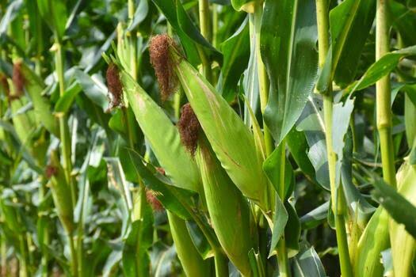

Advanced virology research, diagnostics, and indexing for agricultural sustainability in Africa.
The Virology Unit is dedicated to diagnosing and managing viral diseases affecting key staple crops. By ensuring germplasm health, we support the safe movement of agricultural materials and protect food security across the continent.
Monitoring and managing Cassava Mosaic Disease and Brown Streak Disease.
Ensuring virus-free yam planting materials through advanced indexing.

Tracking Maize Lethal Necrosis and other emerging viral threats.
Diagnostics for Banana Bunchy Top Virus (BBTV) and streak viruses.